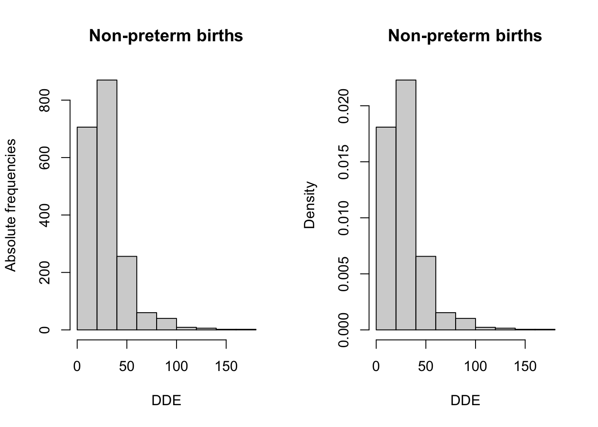
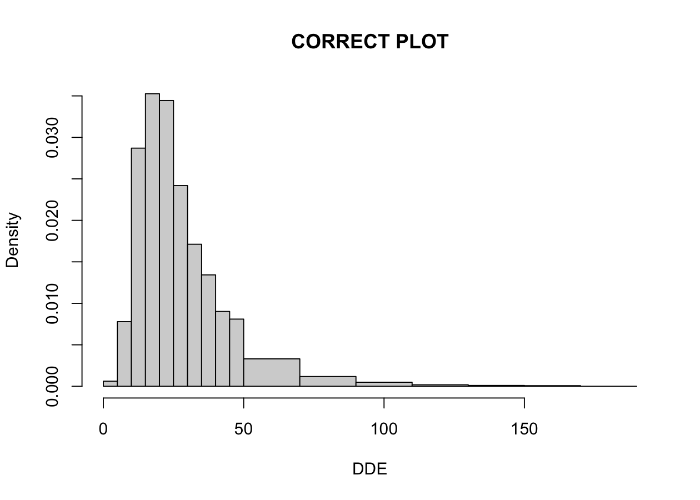
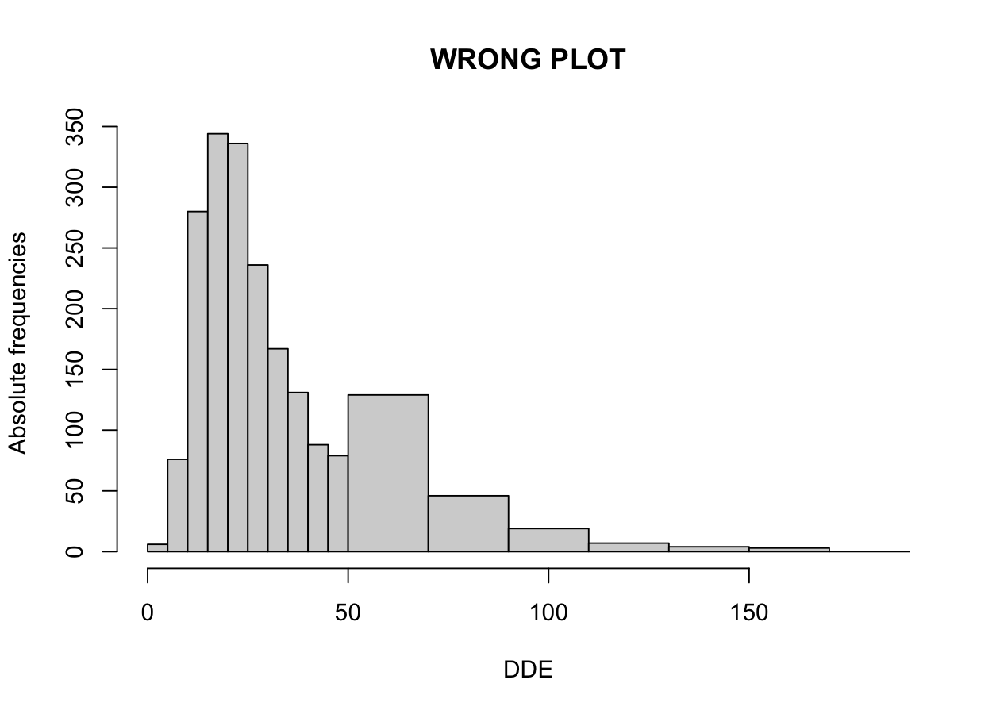
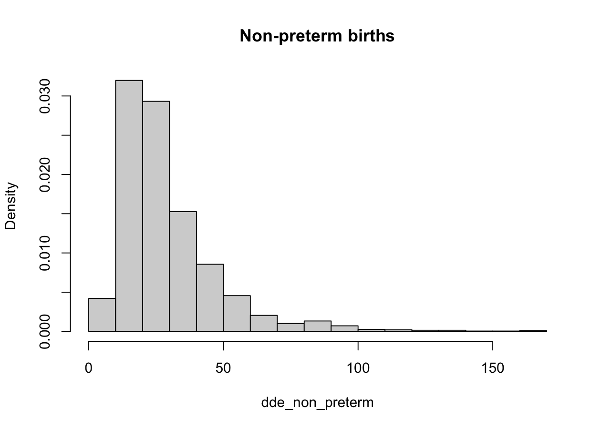
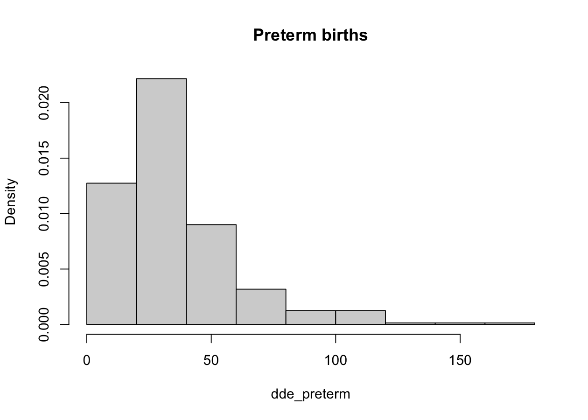
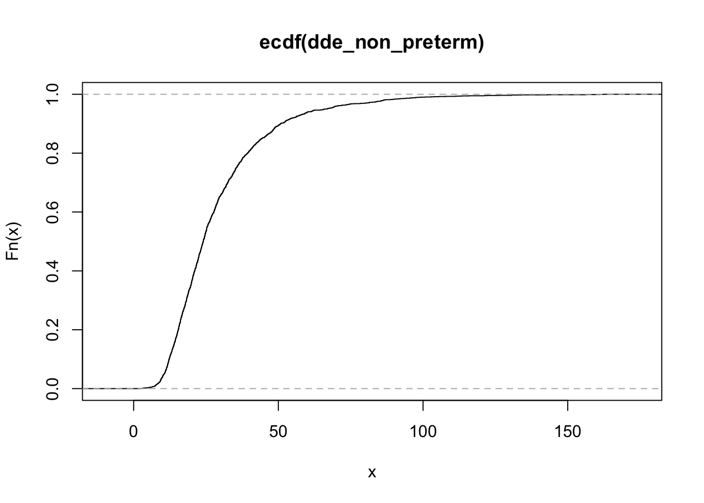
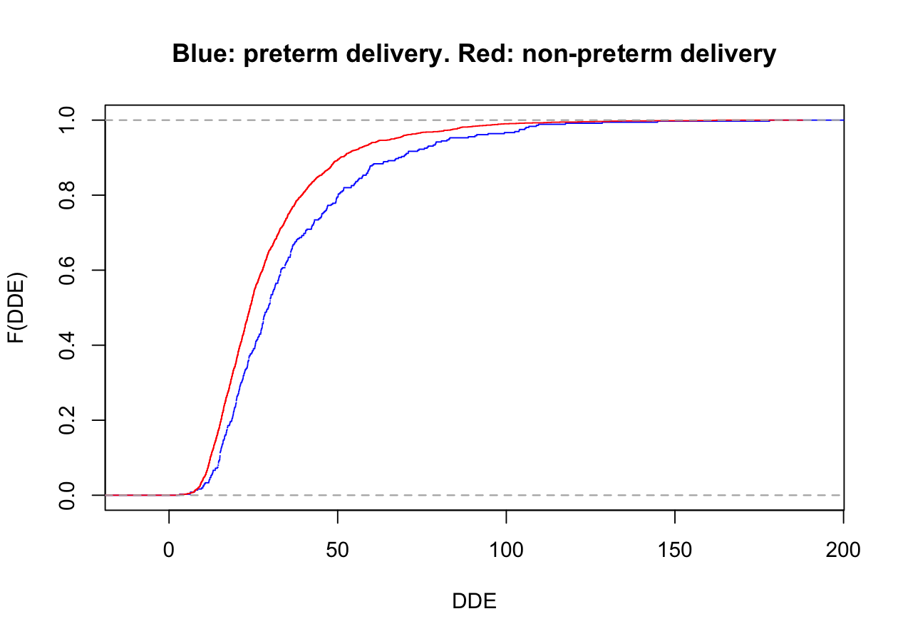
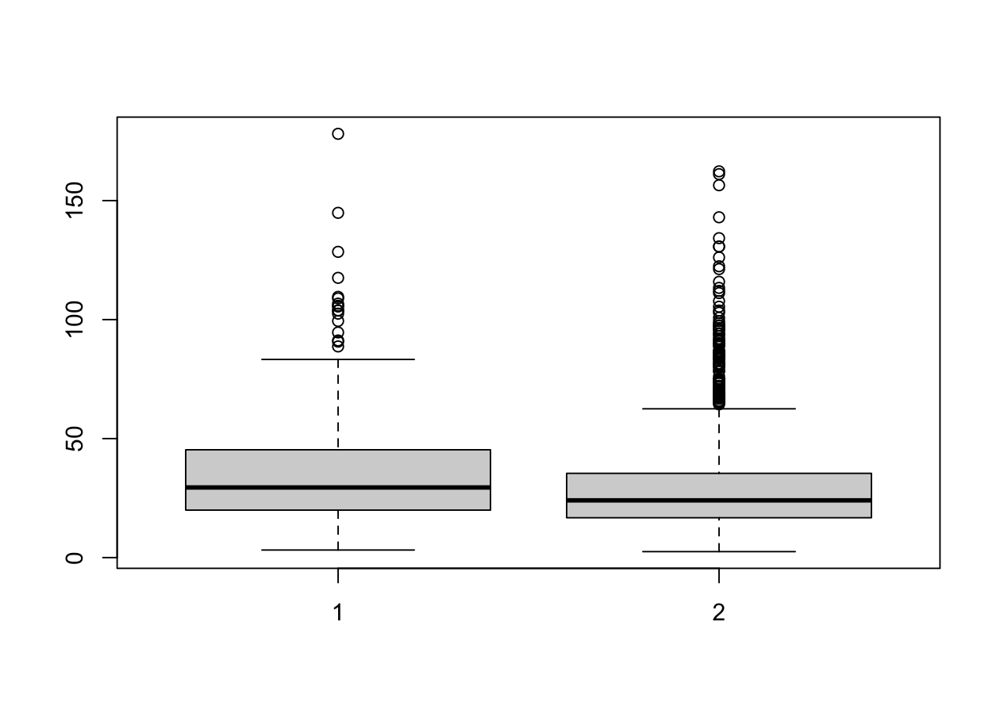

dde <- read.table("data/dde.csv", header = TRUE, sep = ",")Descriptive analysis of the dde data
Programming and Data Analysis with R
Homepage
Topics covered
- Absolute and relative frequencies
- The cumulative distribution function
- Graphical representations (boxplots, histograms)
- Location indices (mean, median, quantiles)
The epidemiological problem
DDT is extremely effective against malaria mosquitoes and is therefore widely used in areas where malaria is endemic.
At the same time, DDT could represent a health risk, especially in the case of pregnant women.
For a sample of n = 2312 pregnant women, DDE is measured, that is a substance related to DDT, present in the maternal serum during the third trimester of pregnancy.
The variable GAD (Gestational Age at Delivery) measures instead on which day of the pregnancy the delivery took place.
Importing the dde data
To be able to run the next commands, you need to download the file dde.csv and save it on your computer. Link to the file
Alternatively, we can simply obtain them using the link:
dde <- read.table("https://tommasorigon.github.io/EnvEcoStat/data/dde.csv",
header = TRUE, sep = ","
) # Downloads the file from the internetstr(dde)'data.frame': 2312 obs. of 2 variables:
$ DDE: num 24.6 15.6 54.8 15 33.5 ...
$ GAD: int 292 289 252 285 281 283 277 284 293 277 ...Note the presence of a new type of variable, that is integer, namely integer numbers.
Preliminary operations
A total of 361 women delivered prematurely, that is before the end of the 37th week.
To check this, we split the variable DDE into two groups.
dde_preterm <- dde$DDE[dde$GAD < 37 * 7] # Preterm delivery group
dde_non_preterm <- dde$DDE[dde$GAD >= 37 * 7] # Non-preterm delivery group
length(dde_preterm) # Sample size of group 1[1] 361length(dde_non_preterm) # Sample size of group 2[1] 1951The first group (variable dde_preterm) refers to preterm deliveries and comprises 361 observations.
The second group (variable dde_non_preterm) considers non-preterm deliveries and comprises the remaining 1951 observations.
Splitting into intervals
To summarise the data through frequencies, we can split the interval that contains all the observed values (that is (0,180]) into a certain number of sub-intervals.
First of all, we define the 10 sub-intervals of length 18, closed on the right, through the command cut:
breaks <- 18 * (0:10) # Definition of the intervals: 10 intervals of length 18
dde_preterm_class <- cut(dde_preterm, breaks = breaks)
dde_non_preterm_class <- cut(dde_non_preterm, breaks = breaks)
head(dde_preterm_class)[1] (54,72] (18,36] (18,36] (0,18] (0,18] (18,36]
10 Levels: (0,18] (18,36] (36,54] (54,72] (72,90] (90,108] ... (162,180]In this way, we have transformed a numeric variable into a factor variable.
Absolute frequencies
The absolute frequencies n_1,\dots, n_k are obtained through the command table, which makes sense to apply to variables of type factor.
The function table counts how many times a given category appears in the vector.
We perform this operation for both groups of data:
freq_abs_preterm <- table(dde_preterm_class)
freq_abs_pretermdde_preterm_class
(0,18] (18,36] (36,54] (54,72] (72,90] (90,108] (108,126] (126,144]
68 164 65 34 14 10 3 1
(144,162] (162,180]
1 1 freq_abs_non_preterm <- table(dde_non_preterm_class)
freq_abs_non_pretermdde_non_preterm_class
(0,18] (18,36] (36,54] (54,72] (72,90] (90,108] (108,126] (126,144]
573 906 308 91 40 19 6 5
(144,162] (162,180]
2 1 Relative frequencies
Once the absolute frequencies have been obtained, it is possible to compute the relative frequencies.
Although it is possible to use the command prop.table (we will meet it again later), here we follow a more direct route.
Recall indeed that n = n_1 + \cdots + n_k, therefore we can obtain the relative frequencies f_j = n_j / n as follows:
freq_rel_preterm <- freq_abs_preterm / sum(freq_abs_preterm)
round(freq_rel_preterm, digits = 3)dde_preterm_class
(0,18] (18,36] (36,54] (54,72] (72,90] (90,108] (108,126] (126,144]
0.188 0.454 0.180 0.094 0.039 0.028 0.008 0.003
(144,162] (162,180]
0.003 0.003 freq_rel_non_preterm <- freq_abs_non_preterm / sum(freq_abs_non_preterm)
round(freq_rel_non_preterm, digits = 3)dde_non_preterm_class
(0,18] (18,36] (36,54] (54,72] (72,90] (90,108] (108,126] (126,144]
0.294 0.464 0.158 0.047 0.021 0.010 0.003 0.003
(144,162] (162,180]
0.001 0.001 Organising the results
We then collect the results just obtained inside a matrix, to display them better.
tab_summary <- cbind(
freq_abs_preterm, freq_abs_non_preterm,
freq_rel_preterm, freq_rel_non_preterm
)
colnames(tab_summary) <- c(
"n_j preterm",
"n_j non-preterm",
"f_j preterm",
"f_j non-preterm"
)
round(tab_summary, 3) # Display of the results n_j preterm n_j non-preterm f_j preterm f_j non-preterm
(0,18] 68 573 0.188 0.294
(18,36] 164 906 0.454 0.464
(36,54] 65 308 0.180 0.158
(54,72] 34 91 0.094 0.047
(72,90] 14 40 0.039 0.021
(90,108] 10 19 0.028 0.010
(108,126] 3 6 0.008 0.003
(126,144] 1 5 0.003 0.003
(144,162] 1 2 0.003 0.001
(162,180] 1 1 0.003 0.001Histograms I
The histogram makes it possible to represent a frequency distribution graphically. To refresh your memory, recall that in its simplest version one sets:
\begin{aligned} (\text{base of the rectangles}) &= (\text{length of the intervals}) \\ (\text{height of the rectangles}) &= (\text{absolute frequencies}) \end{aligned}
This definition is not appropriate if the intervals have different sizes.
In that case, the heights of the rectangles must be proportional to the density of the observations in the individual classes.
To sum up, we will build the histograms setting
\begin{aligned} (\text{base of the rectangles}) &= (\text{length of the intervals}) \\ (\text{height of the rectangles}) &= \lambda \times (\text{density}) = \lambda \times \frac{(\text{absolute frequencies}) }{(\text{length of the intervals})} \end{aligned}
where one typically sets \lambda = 1/n.
Histograms II
Let us initially focus only on the group of non-preterm births, to understand how the R syntax works.
par(mfrow = c(1, 2)) # Splits the plot into two parts
# First plot, absolute frequencies
hist(dde_non_preterm,
freq = TRUE,
breaks = 10, # We use 10 sub-intervals
# From here on we are only adding aesthetic details
main = "Non-preterm births",
xlab = "DDE",
ylab = "Absolute frequencies"
)
# Second plot, density
hist(dde_non_preterm,
freq = FALSE, # Frequencies are NOT used
breaks = 10, # We use 10 sub-intervals
# From here on we are only adding aesthetic details
main = "Non-preterm births",
xlab = "DDE",
ylab = "Density"
)
Histogram based on the absolute frequencies (left) and on the density (right), only for the group of non-preterm births.
Histograms III
# Definition of UNEQUALLY spaced intervals
breaks <- c(5 * 0:10, 70, 90, 110, 130, 150, 170, 190)
# CORRECT PLOT
hist(dde_non_preterm,
freq = FALSE,
breaks = breaks,
# From here on we are only adding aesthetic details
main = "CORRECT PLOT", xlab = "DDE", ylab = "Density"
)
# WRONG PLOT
hist(dde_non_preterm,
freq = TRUE, # Frequencies are used
breaks = breaks,
# From here on we are only adding aesthetic details
main = "WRONG PLOT", xlab = "DDE", ylab = "Absolute frequencies"
)Warning in plot.histogram(r, freq = freq1, col = col, border = border, angle =
angle, : the AREAS in the plot are wrong -- rather use 'freq = FALSE'
The plot on the left is correct and makes use of the notion of density explained above. The plot on the right is wrong.
Fortunately R warns us through a warning that this procedure is incorrect.
The number of intervals
A number of intervals that is too low entails a loss of information.
Conversely, a number of intervals that is too high entails a loss of synthesis.
Keep in mind that the number of intervals must depend on the number of data points.
Various formulas have been proposed to identify the “optimal number” of intervals. They should however be taken as suggestions and not used automatically.
Sturges. The number of intervals, rounded to the nearest integer, is (\text{number of intervals}) = 1 + \log_2{n}.
Freedman & Diaconis. The number of intervals, rounded to the nearest integer, is (\text{number of intervals}) = \frac{x_{(n)} - x_{(1)}}{2(\mathcal{Q}_{0.75} - \mathcal{Q}_{0.25})}n^{1/3}.
The number of intervals II
The “optimal” number of intervals can be obtained through the following commands:
nclass.Sturges(dde_non_preterm) # Sturges' rule[1] 12nclass.FD(dde_non_preterm) # Freedman and Diaconis' rule[1] 54Comparison between the two distributions
This final plot finally makes it possible to compare the two distributions.
hist(dde_non_preterm, # Non-preterm births group
freq = FALSE,
main = "Non-preterm births"
)
hist(dde_preterm, # Preterm births group
freq = FALSE,
main = "Preterm births"
)
Possibly, it is possible to select a different rule by setting breaks = "FD".
The distribution of “preterm births” turns out to be shifted further to the right.
The empirical cumulative distribution function I
A second graphical representation of frequent use is the so-called empirical cumulative distribution function F(x).
Let x_1,\dots,x_n be a collection of data, then we define F(x) = \frac{1}{n} \sum_{i=1}^n \mathbb{1}(x_i \le x), where \mathbb{1}(x_i \le x) is the indicator function and equals 1 if x_i \le x and 0 if x_i > x.
In R, one uses the command ecdf (empirical cumulative distribution function), for example:
ecdf(dde_non_preterm)Empirical CDF
Call: ecdf(dde_non_preterm)
x[1:1585] = 2.5, 2.95, 3.14, ..., 161.11, 162.29The empirical cumulative distribution function II
The command ecdf returns as an object an actual function. Indeed:
F_non_preterm <- ecdf(dde_non_preterm)
F_non_preterm(c(20, 40, 60)) # Evaluates the empirical cdf at 20, 40 and 60[1] 0.3618657 0.8077909 0.9390056sum(dde_non_preterm <= 40) / length(dde_non_preterm) # Alternative "manual" command[1] 0.8077909To draw a plot of it, it is moreover enough to use the command plot:
par(mfrow = c(1, 1))
plot(ecdf(dde_non_preterm))
The empirical cumulative distribution function III
To be able to compare the cumulative distribution functions of the two groups, the syntax is slightly more elaborate:
plot(ecdf(dde_preterm),
do.points = FALSE, col = "blue",
main = "Blue: preterm delivery. Red: non-preterm delivery",
xlab = "DDE",
ylab = "F(DDE)"
)
plot(ecdf(dde_non_preterm), col = "red", add = TRUE) # Add a second group
The option do.points = FALSE omits the “dots” in the plot and has been added for purely aesthetic reasons.
Location indices: the mean
To quantify the difference between the two distributions, we want to find the arithmetic means of the variables dde_preterm and dde_non_preterm.
In R there is of course a dedicated command:
mean(dde_preterm) # Arithmetic mean of DDE for women with preterm delivery[1] 36.20299mean(dde_non_preterm) # Arithmetic mean of DDE for women with regular delivery[1] 29.14199As already widely noted, we observe that DDE is present in larger quantities among the women who delivered prematurely.
The arithmetic mean could also have been obtained starting from the commands we met in the previous units:
n <- length(dde_preterm) # Sample size of dde_preterm (= 361)
sum(dde_preterm) / n # Arithmetic mean of the variable dde_preterm[1] 36.20299Location indices: the median I
The median (Me) of a variable is the central value of the distribution, that is:
\text{Me} = \begin{cases}x_{\left(\frac{n+1}{2}\right)}, &\qquad \text{ if } n \text{ is odd}, \\[10pt] \left(x_{(n/2)} + x_{(n/2+1)}\right)/2,&\qquad \text{ if } n \text{ is even},\end{cases} where x_{(1)},\dots,x_{(n)} represents the ordered sample.
In R there is a dedicated command:
median(dde_preterm) # Median of DDE for women with preterm delivery[1] 29.46median(dde_non_preterm) # Median of DDE for women with regular delivery[1] 24.04Note (why?) that the empirical cumulative distribution function, evaluated at the median, is approximately equal to 0.5.
F_non_preterm(median(dde_non_preterm))[1] 0.5002563Location indices: the median II
The median of a numerical variable can also be obtained “manually”.
x <- c(10, 20, 25, 3.5, 28, 62)
n <- length(x) # Sample size
n # Note that n = 6 is even[1] 6x_sort <- sort(x) # Ordered vector of the values of x
x_sort[1] 3.5 10.0 20.0 25.0 28.0 62.0pos_med_1 <- n / 2 # Element in position n/2
pos_med_2 <- n / 2 + 1 # Element in position n/2+1
(x_sort[pos_med_1] + x_sort[pos_med_2]) / 2 # Median of x[1] 22.5median(x) # Of course, the result must coincide with:[1] 22.5Location indices: the quantiles I
Let x_1,\dots,x_n be a set of data, let p \in (0,1) and let F(x) be the empirical cumulative distribution function. The p-quantile is then equal to
\mathcal{Q}_p = \inf\{ x : F(x) \ge p \}.
In R, considering p = (0.1,0.25,0.75,0.9), that is the first decile, the first quartile, the third quartile and the ninth decile, we can use the command quantile
quantile(dde_preterm, probs = c(0.1, 0.25, 0.75, 0.9), type = 1) 10% 25% 75% 90%
15.07 19.94 45.30 68.01 quantile(dde_non_preterm, probs = c(0.1, 0.25, 0.75, 0.9), type = 1) 10% 25% 75% 90%
12.23 16.73 35.45 50.72 Location indices: the quantiles II
That definition is obtained with the option type = 1, which however is not the default. The default value is instead type = 7.
If you are curious to know the various definitions of quantile, remember that the documentation can be consulted through the command: ? quantile.
Location indices: the quantiles III
In R there are in total as many as 9 ways of computing the quantiles.
Fortunately, for large sample sizes the differences tend to be negligible.
We list below some examples for the variable dde_preterm:
tab <- rbind(
quantile(dde_preterm, probs = c(0.1, 0.25, 0.5, 0.75, 0.9), type = 1),
quantile(dde_preterm, probs = c(0.1, 0.25, 0.5, 0.75, 0.9), type = 6),
quantile(dde_preterm, probs = c(0.1, 0.25, 0.5, 0.75, 0.9), type = 7),
quantile(dde_preterm, probs = c(0.1, 0.25, 0.5, 0.75, 0.9), type = 9)
)
rownames(tab) <- c(1, 6, 7, 9) # Changes the names of the rows of the table
tab 10% 25% 50% 75% 90%
1 15.070 19.94 29.46 45.30000 68.010
6 15.054 19.94 29.46 45.49000 68.738
7 15.070 19.94 29.46 45.30000 68.010
9 15.060 19.94 29.46 45.41875 68.465The summary command
To obtain quickly the main descriptive statistics of a distribution (minimum, maximum, mean, median and quartiles), one often uses the command summary:
summary(dde_preterm) Min. 1st Qu. Median Mean 3rd Qu. Max.
3.17 19.94 29.46 36.20 45.30 178.06 summary(dde_non_preterm) Min. 1st Qu. Median Mean 3rd Qu. Max.
2.50 16.73 24.04 29.14 35.40 162.29 The command summary can also be used directly on an object of type data.frame, producing the following output:
summary(dde) DDE GAD
Min. : 2.50 Min. :194.0
1st Qu.: 17.13 1st Qu.:267.0
Median : 24.68 Median :277.0
Mean : 30.24 Mean :274.9
3rd Qu.: 36.52 3rd Qu.:286.0
Max. :178.06 Max. :315.0 Boxplots
An alternative graphical representation to histograms are boxplots.
The descriptive statistics on which boxplots are based can be obtained through the command boxplot.stats, that is:
boxplot.stats(dde_preterm)$stats
[1] 3.17 19.94 29.46 45.30 83.25
$n
[1] 361
$conf
[1] 27.35112 31.56888
$out
[1] 94.60 99.42 144.86 105.83 90.73 128.47 91.23 102.50 178.06 88.72
[11] 117.54 108.90 106.70 105.48 109.55 103.88 103.77boxplot(dde_preterm, dde_non_preterm) # Produces the plot